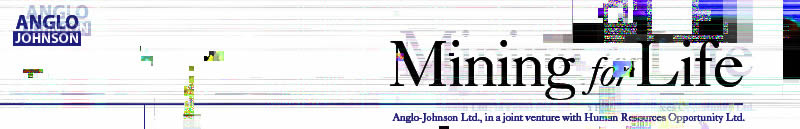
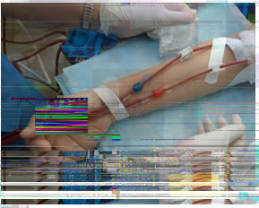
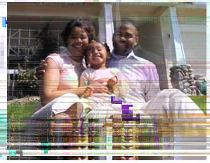

 |
|
|
|
 |
 |
|
|
|
• Blood donors will receive a 2₤ per work day bonus for a period of 4 weeks following
donation, for a
maximu m of 52₤.
• Bone marrow donors will receive a 1₤ per work day bonu
78₤.
• Cornea donors will receive a bo
Alternately, if their child(ren)* qualifies, employee can enroll their child(ren) in A level preparatory classes
without paying the Education Premium.
• Skin donors will receive a 1₤ t
desirability of the donation, for a maximum of 390₤. (See Employee Ha
qualifications.)
• Kidney donors guaran
opportunity for their children* to be considered for an A-J scholarship in England or the US.
Special incentives including entry into the im
multiple conversions. Check with Human Resources for current programs and bonuses.
* Children will be subject to DNA QwikTest ™ to de
internationally recognized court documents of adoption.
Payment will be withheld if employee is suspended or released from employment during the payment period.
Anglo-Johnson Ltd., prov
• Blood donors will receive a 2₤ per work day bonus for a period of 4 weeks following donation, for a
maximum of 52₤.
• Bone marrow donors will receive a 1₤ per work day bonus for a period of 12 weeks, for a maximum of
78₤.
• Cornea donors will receive a bonus of 4₤ per work day for a period of 12 weeks, for a maximum of 312₤.
Alternately, if their child(ren)* qualifies, employee can enroll their child(ren) in A level preparatory classes
without paying the Education Premium.
• Skin donors will receive a 1₤ to 5₤ bonus per day for a period of 12 weeks based on quantity and
desirability of the donation, for a maximum of 390₤. (See Employee Handbook for restrictions and
qualifications.)
• Kidney donors guarantee a 10% raise over base salary for a period of 3 years after donation. Plus the
opportunity for their children* to be considered for an A-J scholarship in England or the US.
Special incentives including entry into the immigration lottery are available to employees who participate in
multiple conversions. Check with Human Resources for current programs and bonuses.
* Children will be subject to DNA QwikTest ™ to determine blood relationship with at least one parent, or parent
must show
internationally recognized court documents of adoption.
Payment will be withheld if employee is suspended or released from employment during the payment period.
Anglo-Johnson Ltd., providing life-saving options for families in South Africa